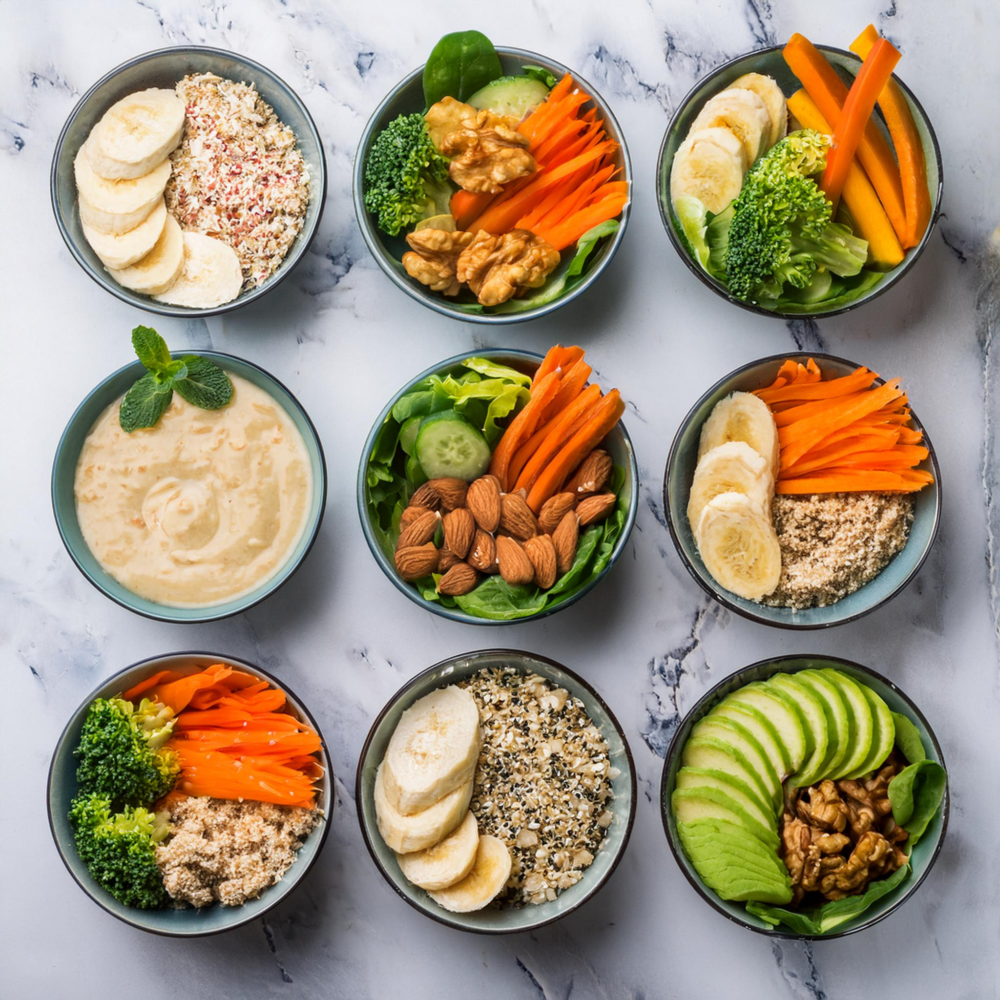

MEAL 2

Meal Plan 2:
-
Breakfast: Oatmeal with sliced banana and almond milk, topped with chopped nuts.
-
Snack: Carrots with hummus.
-
Lunch: Turkey lettuce wraps with sliced bell pepper and avocado.
-
Snack: Smoothie made with spinach, banana, almond milk, and protein powder.
-
Dinner: Grilled chicken breast with roasted broccoli and quinoa.
Grilled Chicken Breast With Broccoli Recipe:
-
Place the chicken in a bowl or resealable plastic bag. Whisk together the ⅓ cup dijon, ¼ cup honey and 1
tablespoon olive oil. Pour it over the chicken and marinate for at least 30 minutes or even overnight.
Stick it in the fridge, covered, to marinate.
-
When ready to grill, preheat the grill to high. Remove the chicken about 20 minutes before grilling to
take the chill off. In a small bowl, I whisk together another 2 tablespoons of honey and 3 tablespoons
of dijon, for basting the chicken while grilling. This is optional but very delicious!
-
Place the broccoli florets in a bowl and drizzle with the remaining olive oil. Sprinkle on a big pinch
of salt and pepper and a sprinkle of garlic powder. Toss well. Spread the florets on a grill pan in a
(mostly) single layer. If you don’t have a grill pan, you can use aluminum foil. I do 2 or 3 layers of
foil and foil up the edges to make a tray.
-
Place the chicken on the grill. Grill for 5 to 6 minutes per side, or until the temperature in the
thickest part of the chicken registers at 165 degrees F. The last 2 to 3 minutes, brush the chicken with
the honey mustard mixture.
-
While the chicken is grilling, place the broccoli on the other side, whether on the grill pan or foil.
Grill these both with the lid closed. Toss the broccoli every few minutes, until it’s charred and golden
enough for your liking. This usually takes around 10 minutes.
- Remove the chicken and broccoli from the grill. Let the chicken rest for 5 minutes. Serve!
Go Back